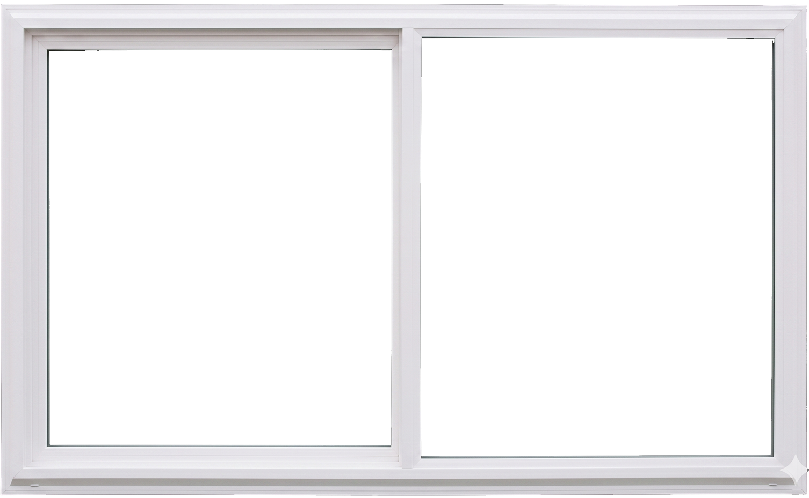

你甘有好無？
您的性別
男生
女生
阿孫性別
男生
女生
(給阿孫起名)
▶
開始
🔑 Gemini API Key
👁
Key 只存在這個分頁的記憶體中，關閉分頁即消失。沒有 Key 嗎？
點這裡申請
請先輸入 Gemini API Key 才能開始遊戲
王小明
小提示

大 紅 色
天 空 藍
草 綠 色
再 試 一 次
先 回 去
起霧倒數
阿罵，窗戶起霧了，擦一下吧。
►（下 一 題）
🏠（今 天 先 這 樣）